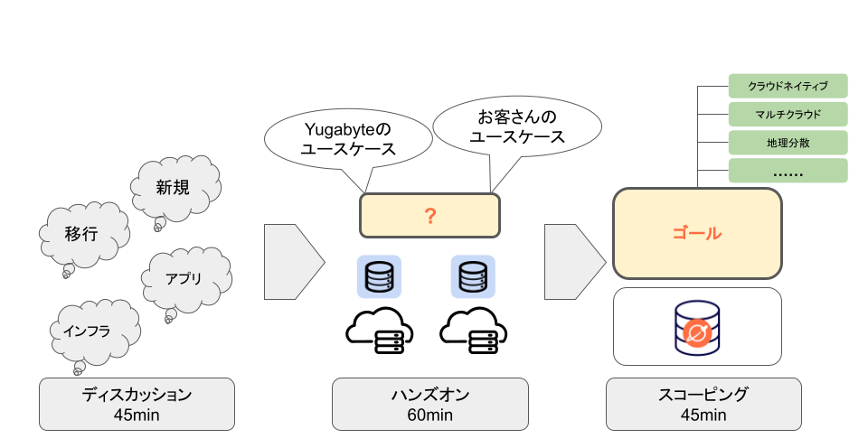

To indicate how long each slide will take to go through, set the Duration under each Heading 2 (i.e. ##) to an integer. The integers refer to minutes. If you set Duration: 4 then a particular slide will take 4 minutes to complete.
The total time will automatically be calculated for you and will be displayed on the codelab once you create it.
To include code snippets you can do a few things.
{
key1: "string",
key2: integer,
key3: "string"
}
for (statement 1; statement 2; statement 3) {
// code block to be executed
}

Checkout the official documentation here: Codelab Formatting Guide